文章目录：
一.登录到官网下载指定python版本
二.在win10中安装python3.6.6并验证安装结果
三.运行python的三种方法
1.登录到python官网：https://www.python.org/，点击Downloads
2.选择需要下载的版本，点击版本后的Download
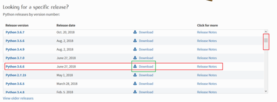
3.选择操作系统为Windows的exe文件进行下载
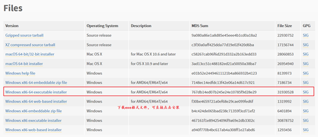
4.下载到桌面后，查看文件属性，如下图：
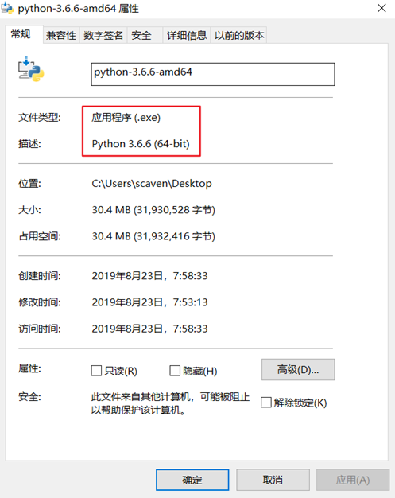
1.双击python-3.6.6-amd64.exe文件，进入安装界面，选择Customize installation进行下一步安装，
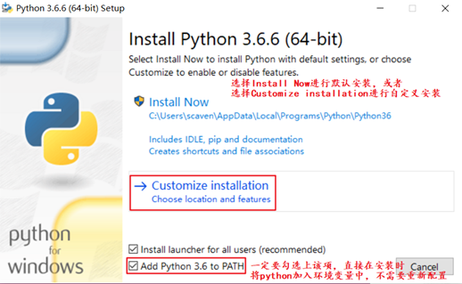
2.选择需要安装的功能，根据业务需求进行选择安装，完成后点击Next
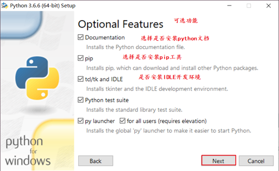
3.选择需要安装的高级功能选项，根据业务需求进行选择安装，并设定安装路径，完成后点击Install进行安装
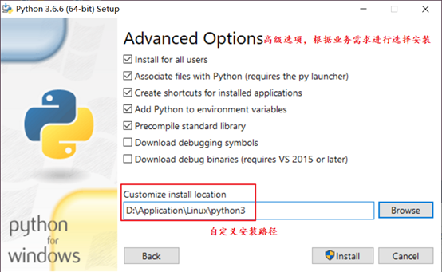
4.配置完成进行安装
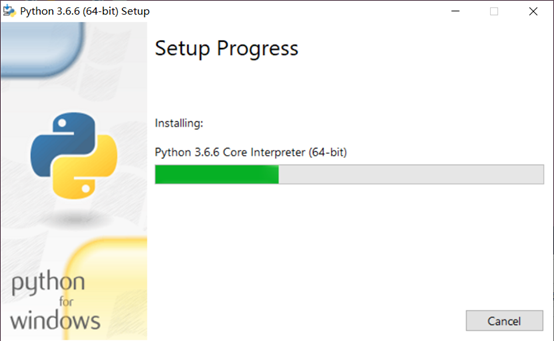
5.安装成功：
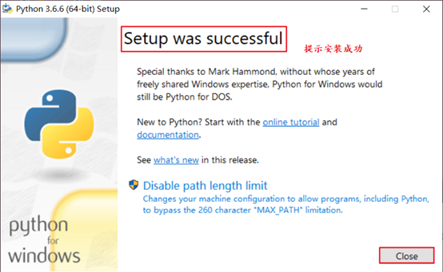
6.验证安装，在windows系统的cmd命令提示符中输入python -V查看python版本信息，能查看到版本信息，则证明安装没有问题（如下图），若查询不到版本信息，请重新安装：
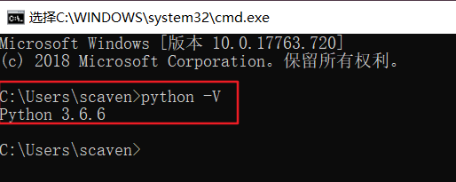
备注：服务能正常跑起来才能证明服务没有问题，并不是安装完成没有任何报错就成功了，严谨的态度是安装完成后应该验证安装的结果。
1：点击电脑桌面上的windows图标，找到刚刚安装的Python3.6文件夹，点击IDLE或者Python3.6
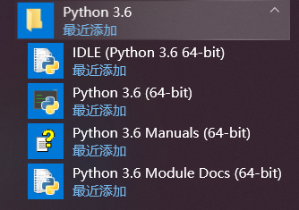
2：打开windows系统的cmd命令提示符，输入python进入，退出python的方法有两种--ctrl+z或者输入exit()
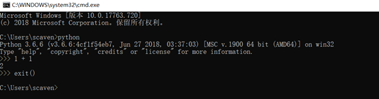
3：在window10的搜索框里输入IDLE，点击回车进入IDLE，如下图：
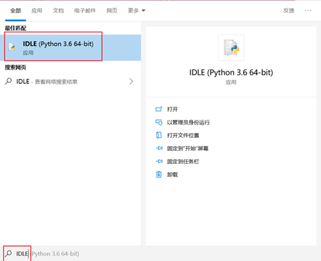
点击回车后，界面如下
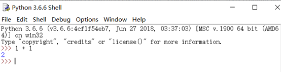